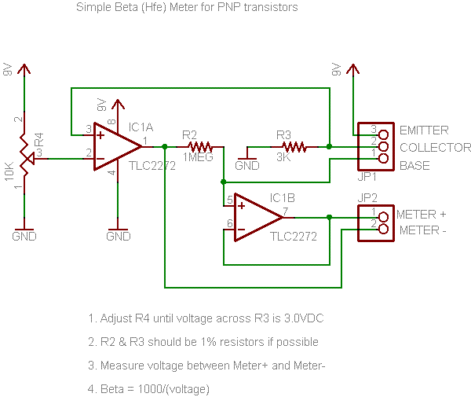

Here's a bunch of x0xb0x mods you might want to put in.
Just about any mod that works for the 303 can also be made to the x0xb0x.
I found this mods on a schematic. Its not tested but should work: basically it just lowers the bass cutoff by one octave.
For Bass Boost: change C21 and C20 from .01uF to .1uF
The German says:
"the more pronounced resonance of the
303 is due to the high gains on the pnp transistors in the vcf.
we couldnt get the exact 'binned' parts so the gains may not be as high as
the original. the 2sa733p has a beta (gain) which ranges from 270
to 310 or so whereas the 2sa733ap has a beta from
300 to 350 or something of that nature. (the original used 2sa733ap's
whereas we use 2sa733p's) ...so if they check the betas they can
place them at the right place. id start with q10 then q9 and if
there is one good one left the vco could use one at q8"
also
"the warble in the resonance is due to powerline fluctuations
since the synth is run off of an op amp as a power supply. it has
troubles at high current draw. also there are tons of low pass filters
on the supply that cause droops when large power surges occur. r95
and c28 for example. at any rate, the power supply we built was
a bit stiffer than the original. this stiffness can be taken away
by increasing the resistance of 100ohm resistor that feeds the opamp.
i havent verified this but im pretty sure it would give more warble
as the op amp would saturate sooner at higher currents also the
bypass cap at that point could be decreased"
So, if you want to get a better 'clone' of the original resonance, use the highest-beta (preferably 300 or higher) transistors in Q10, Q9 and Q8. Then replace R1 in the power supply, on the IO-board, with a larger value, perhaps as large as 200ohms. Note that there are a few different ways to measure 'beta' and your meter may not be the same as another. Therefore, just pick the highest beta (test all of them) and mark those with wite-out or similar. Be sure to read the manual for your multimeter to see if it has transistor beta/hFE/gain testing. The 733 is a PNP with ECB (emitter-collector-base) pinout so put it in the tester properly!

If you dont have a multimeter with built-in beta testing, you can build this simple circuit using inexpensive components and use it to test the betas of your 2SA733Ps. Be sure to use a rail-to-rail op-amp such as the TLC2272, and 1% resistors if possible. (If you cant find 1% resistors, get a bunch of 5% ones and measure them to find the closest valued one in the bunch) Any 9V battery will do.

What is beta? Beta is the ratio of 'base current' (current that flows from the base to the emitter) to 'collector current' (current that flows from the collector to the emitter). You could also call it the "gain" of the transistor. Beta varies with a lot of parameters, including temperature, the collector current you're using to measure with, the voltage between the collector and emitter, as well as inherent differences during manufacturing. This circuit keeps a constant 1mA current going thru the collector and measures the current going into the base, through the 1MEG resistor.
Now, mark your 'high beta' transistors with whiteout or nailpolish to identify them.

To get a boost in resonance, the circuit must be adjusted so that the feedback is increased. There are lots of ways of doing this. Try any one of them (or a combination) and tell us what you think sounds best
- Decrease R97 to ~7.5K
- Decrease R108 to ~1.8K
- Decrease R112 to ~5K
- Increase R109 to ~22K (perhaps even larger?)
Cut the trace between pin #5 of IC11 and where R88, R89, and R90 come together. Solder a 1MEG audio (log. taper) potentiometer between the two points, where one is the wiper (usually the middle pin) and the other is to the "lower" end. That is, when the pot is turned all the way counterclockwise, the two connections should basically be shorted and as you turn the potentiometer clockwise, the resistance should slowly increase to begin, and then increase quickly at the end.
Note: this mod will mess with your tuning a little, especially when the pot is turned all the way up. And there's no way to easily fix it.
If you want to hook up your x0xb0x to a synth with CV out, you'll need a CV in jack. This is pretty straightforward, just use any panel-mount 1/8" jack (or whichever jack you'd like) and connect the sleeve to ground. Solder a wire from the jack tip to one side of a SPDT switch (so you can switch between CV in and internally-generated CV) and the middle to pin 5 of IC11. The other side should be connected to the point where R88, R89, and R90 come together.
If you have a switched jack (with an internal disconnection switch, many jacks are like this) connect the tip connection directly to IC11 and the other end of the switch to the junction point of the resistors as above. Check the datasheet or use your multimeter to verify the pins of your jack.
To make the x0xb0x work withTR606's gate-in mechanism, remove D34 and replace it with a jumper wire. Your TR606 must have been modified to allow gate-in (its not standard)
Use any panel mount jack, and connect the sleeve to ground. The tip should be connected to one side of a 100K resistor, the other side is connected to the negative side of a 1uF capacitor, and the positive side connects to the point where R70 and C17 touch.
Remove R61 and replace it with a jumper wire. This will make it possible to turn the envelope modulation all the way down.
When we designed the x0xb0x, we put in a non-detent tuning pot because that was what the original 303 had. However, this may drive you a little crazy. Panasonic part number P3I9503, an equivalent 50K linear potentiometer with a center detent, is available from DigiKey. Note that you may have to retune the synth once in a while to keep the center detent 'correct'
You can use any 5mm LED in the x0xb0x. However, you may want to use different resistor values in series. Before you go ahead soldering in all 40 LEDs and resistors, test out one or two with different resistor values until you feel like they're the right brightness. (The LEDs are not necessary for the x0xb0x functionality so you can build it and then test LEDs). The original LEDs are superbright reds, if you want to go with blue, UV, purple, or white, you probably want around 1K resistors. YMMV.
The switch caps used are available in 4 colors: black, white, grey and red. You can buy them for cheap at Digikey and snap in whatever you want. They are part numbers 401-1152-ND, 401-1153-ND, 401-1154-ND, and 401-1155-ND.